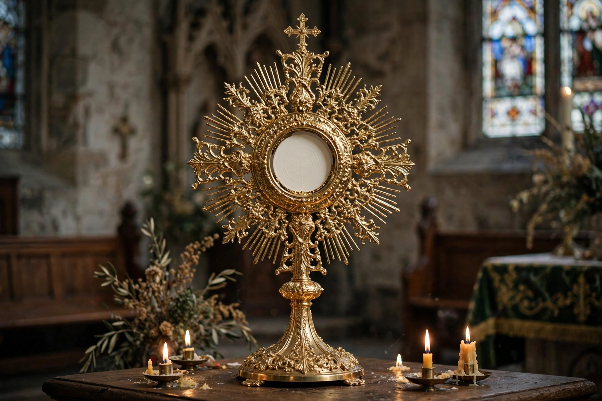

Real presence of Christ in the Eucharist
| Real presence | |
|---|---|
 | |
| Doctrine of | Sacramental theology |
| Affirmed by | Catholic Church, Eastern Orthodoxy, Oriental Orthodoxy, most Lutherans and many Anglicans |
| Key terms | Transubstantiation, consubstantiation (sacramental union), memorialism |
| Feast | Corpus Christi |
The real presence of Christ in the Eucharist is the Christian doctrine that Jesus Christ is truly present in the consecrated bread and wine of the Eucharist — not merely symbolically or in the memory of believers, but in a real, substantial manner. Affirmed in various formulations by the Catholic Church, Eastern and Oriental Orthodox Churches, and (in differing senses) Lutheran and many Anglican traditions, it was one of the central points of controversy in the Protestant Reformation.
History
Belief in a real presence is attested in early Christian writers such as Ignatius of Antioch, Justin Martyr and Irenaeus. Medieval theologians, notably Paschasius Radbertus and later the scholastics, systematised the doctrine; the Fourth Lateran Council (1215) used the term transubstantiation, which Thomas Aquinas explained with Aristotelian categories of substance and accidents: the substance of the bread and wine is converted into the body and blood of Christ while their sensible accidents remain. The Council of Trent (1551) defined the doctrine for Roman Catholicism against Reformation alternatives.
Positions of the traditions
The Catholic Church teaches transubstantiation and practises Eucharistic adoration, reserving the consecrated host in a tabernacle and displaying it in a monstrance. Eastern Orthodoxy likewise affirms a real, objective change (Greek metousiosis) while declining to define its mechanism. Martin Luther rejected transubstantiation but strongly affirmed the real presence "in, with and under" the forms of bread and wine — later labelled, against his usage, consubstantiation, and more accurately called the sacramental union. Reformed theology, following Calvin, teaches a real spiritual presence: believers truly feed on Christ, but by the Holy Spirit rather than by a local presence in the elements. Zwinglian and many Baptist traditions hold a memorialist view, regarding the Supper as a symbolic remembrance. Anglican formularies have historically admitted a range of interpretations.
Practices
Devotions flowing from the doctrine include the feast of Corpus Christi (instituted 1264), Eucharistic processions, benediction, and perpetual adoration chapels, as well as rules for fasting before communion and the careful handling of consecrated elements and any particles or drops.